UMG Mini-Map
Authored by: Rudy Triplett
Introduction
Maybe you need to know where you are, or maybe you need to know where that assassin might be that is sneaking up on you. In either case you are going to need a mini-map. Well the following tutorial will allow you to setup and implement a simple UMG based top down mini-map that will track your player ( don't get lost :-) ).
Simple UMG MiniMap Tutorial
(In almost 50 steps)
1. Open a new 4.6 project
2. Make a new SceneCapture2D blueprint
a. Right click in the Content Broswer > Select Blueprint> type SceneCapture2D > Select SceneCapture2D in the dropdown menu > Click the Select button
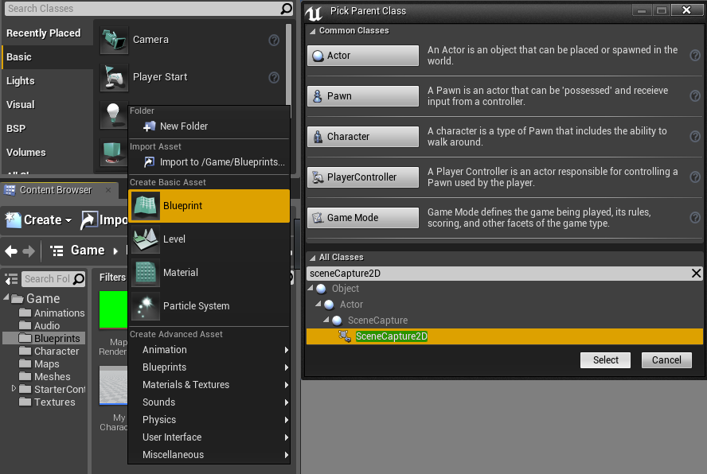
3. Name the new blueprint something appropriate (I named mine “MiniCam”)
4. Open your SceneCapture2D blueprint (MiniCam)
5. Go to the components tab
6. In the Components Panel in the upper left of the window select CaptureComponent2D
7. With the CaptureComponent2D selected go to the Details panel and change the rotation of the Y axis to -90 (NOTE: If the camera does not appear to rotate, take a breath. It’s ok, it still rotated. Don’t let it fool you)
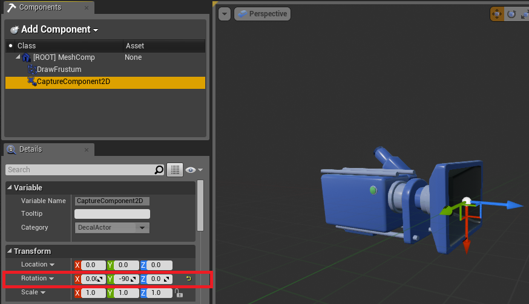
8. Click on the Graph tab in the upper right corner of the window
9. Right click in the event graph > type Custom Event > name this OutSideTick > complete the picture below. This sets up the camera to follow the player without taking into account the player rotation or Z axis. ( NOTE: I have used the Right Click > Split Pins function to expose the x,y,z values of the nodes below)
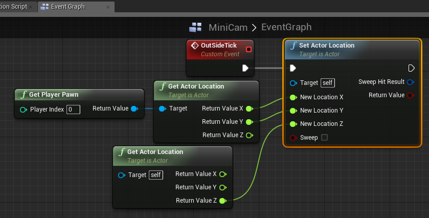
10. Compile and Save SceneCapture2D blueprint (MiniCam)
11. Close SceneCapture2D blueprint (MiniCam)
12. Make a new Widget blueprint
a. Right click in the Content Broswer > Select User Interface > Select Widget blueprint
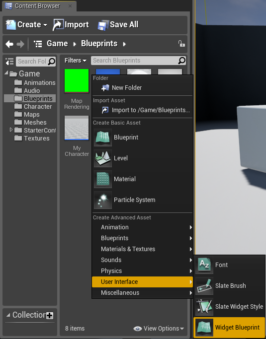
13. Name the new blueprint something appropriate (I named mine “MiniMapWidget”)
14. Open your Widget blueprint (MiniMapWidget)
15. Go to the Palette panel
16. Type image into the search field
17. Drag and drop an image into your Designer graph
18. Scale the image to a size that you would like to use
19. Drag the image into the lower right corner of your canvas panel (the canvas panel is the default root in a widget. It shows up as a green outline)
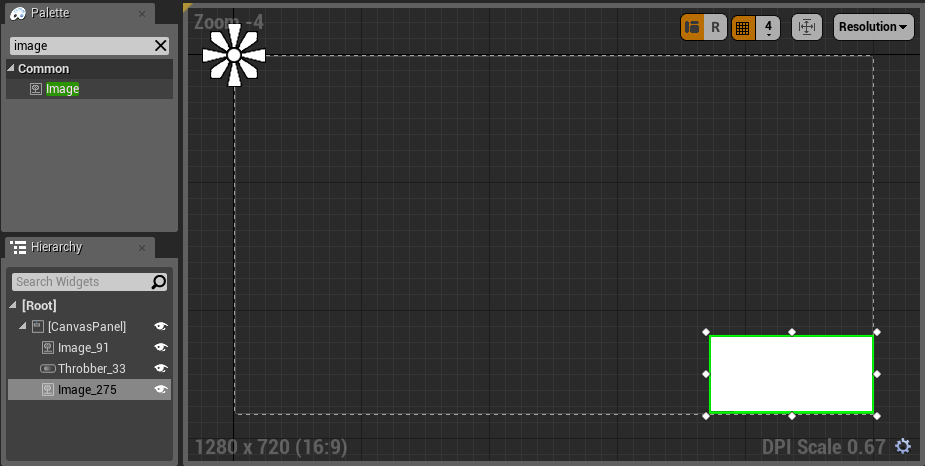
20. Compile and save Widget blueprint (MiniMapWidget)
21. Close Widget blueprint (MiniMapWidget)
22. Make a new TextureRender2D
a. Right click in the Content Broswer > Select Materials & Textures > Select Render Target
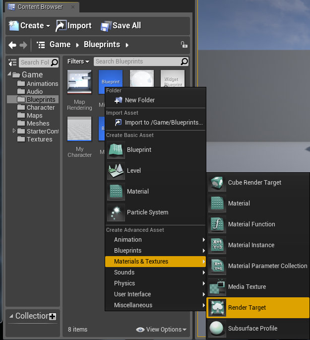
23. Name the new TextureRender2D something appropriate (“MapRendering”)
24. Open your TextureRender2D (MapRendering)
25. Go to the Details panel and under compression set the compression settings to TC_UserInterface2D
26. Just below the Compression section you will see the Level of Detail section. Change the Texture Group to UI
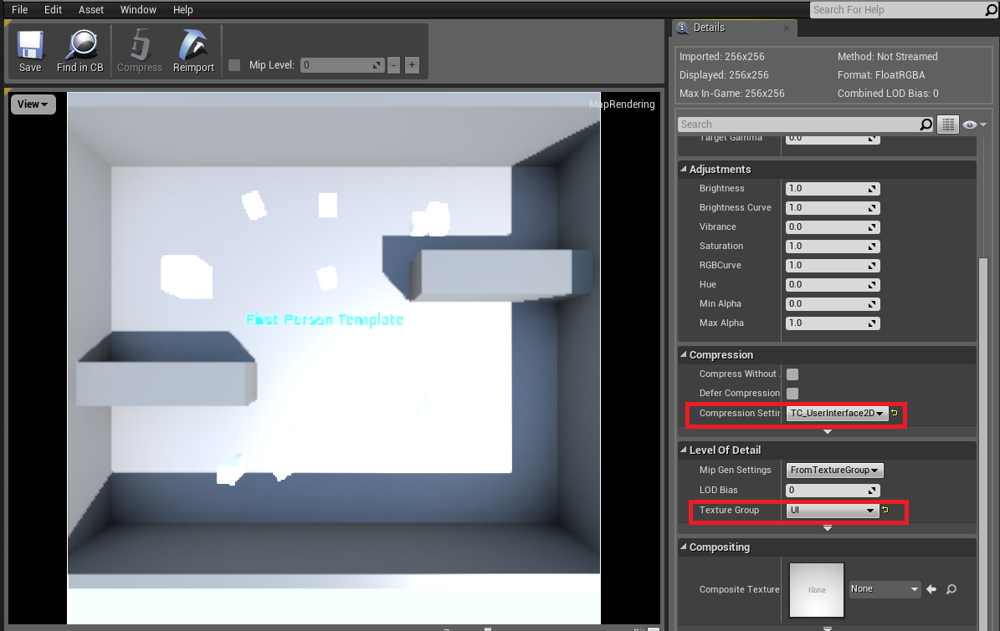
27. Save your TextureRender2D (MapRendering)
28. Close your TextureRender2D (MapRendering)
29. Go back to the content browser and select your SceneCapture2D blueprint (MiniCam). Drag this into the level and place it directly above the player spawn. You can set it to any height (Mine is set to 2400 on the z axis)
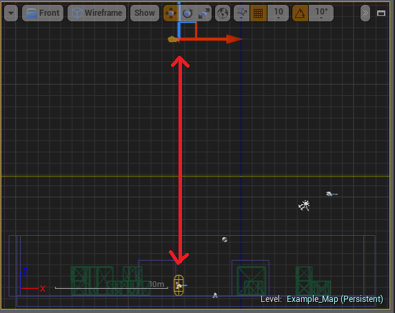
30. With your SceneCapture2D blueprint (MiniCam) selected go to the Details panel to the right of the viewport. Under Scene Capture set the Texture Target to your TextureRender2D (MapRendering)
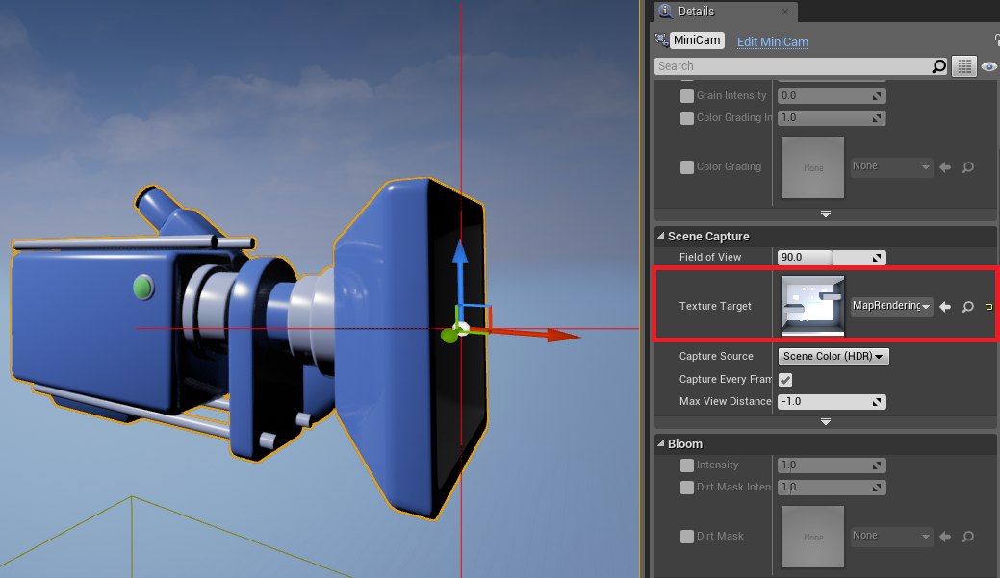
31. Right click your TextureRender2D (MapRendering) > Select Create Material
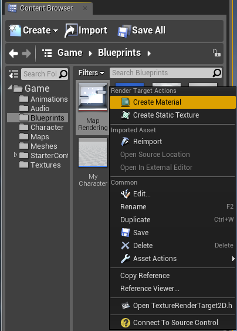
32. Name your new Material something appropriate (I named mine “MiniMap_Mat”)
33. Open your New Material (MiniMap_Mat)
34. Set the Texture sample to drive the Emissive Color of the material
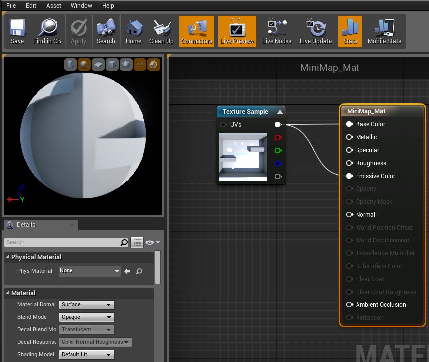
35. Compile and Save Material (MiniMap_Mat)
36. Close Material (MiniMap_Mat)
37. Go to the Content browser open MyCharacter and complete the following picture. This will cast the tick to the SceneCapture2D blueprint and add the Widget blueprint to the viewport.
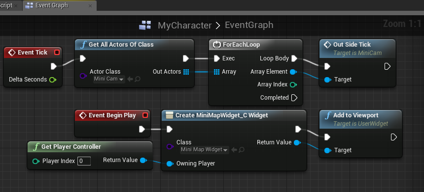
38. Compile and Save MyCharacter
39. Close MyCharacter
40. Go to the content browser and open your Widget blueprint (MiniMapWidget)
41. Select the image and in the details panel set it’s anchor to the bottom right corner
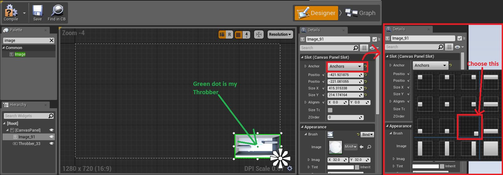
42. Continuing in the Details panel under appearance expand the Brush section and change the image to your Material (MiniMap_Mat)
43. In the Palette panel type Throbber (NOT the circular throbber)
44. Drag and drop a Throbber into the Designer tab
45. Re-size the Throbber so that only one dot can be seen
46. In the Details panel under appearance change its tint to an easy to see color (I chose a dark green)
47. Set the throbber’s Zorder to 1 (Can be found under the slot section)
48. Set the throbber’s anchor to the bottom right
49. Place the throbber over the minimap in the spot that the character will be spawning (this may take some adjusting to get just right)
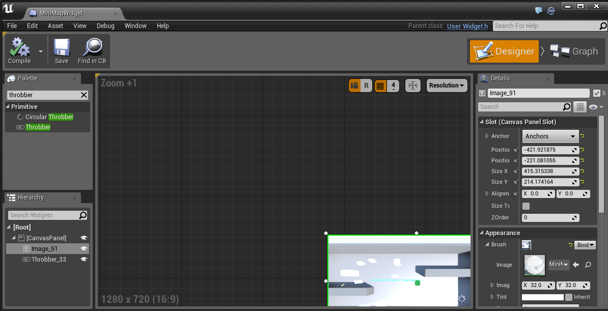
50. Compile and save Widget blueprint
51. Close Widget blueprint
52. Launch game
Addition: Rotating Throbber with Character Rotation
- Using version 4.8.1Addition by: Will Rivendell(thankstipscom)
Summary
This tutorial is awesome. You'll have a minimap and your real-time character location in no time. I wanted to also be able to show where the character was facing when it rotates in game. It's a simple few steps and since this helped me I figured I'd add those additional steps in case anyone wants to do the same.
1. In the UMG, select the Throbber and under 'appearance' change number of pieces to 2.
2. Now resize the throbber so that the first piece is fully visible but the second is cut off by half. (the half piece will show where the character is facing)

Note: you can probably just use your own image like an arrow in place of the actual default throbber icon
3. With the throbber selected, under 'behaviour', click on BIND on the 'is enabled' line
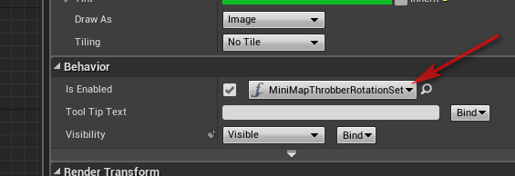
4. Make your bind function look like this:
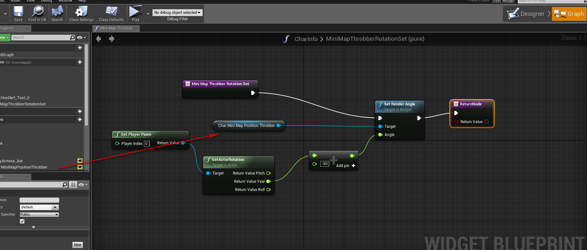
5. Compile and save.
Note: If your rotation is not facing the right way, simple modify the 'PLUS -90' node in the bind function until you have the correct angle. 90, -90, 180, -180 etc...